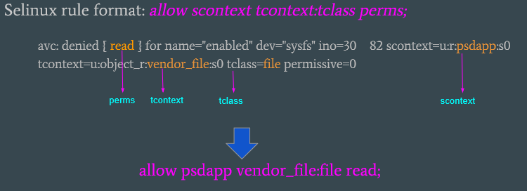

SELinux Configuration and Rules
Security-Enhanced Linux (SELinux) is enabled in Android to enforce the Mandatory Access Control for security. SELinux supports two working modes: permissive and enforcing:
- In permissive mode, it only audits the operations of all domains and prints the AVC (Access Vector Cache) errors that violate the sepolicy rules, but it never blocks any operations.
- In enforcing mode, it prints out the AVC errors and also blocks the operations that violate the sepolicy rules.
It is a good practice to set SELinux in permissive mode at the beginning of the development phase in order to easily bring up the system and fix any SELinux errors. After resolving all AVC errors, change the SELinux mode to enforcing mode.
SELinux Configuration
To change SELinux in build time
For CiV scenario:
The SELinux operation mode is configured using mixins. Edit the
mixins.specfile in the source folder for your lunch target atdevice/intel/project-celadon/<target-name>/mixins.specand rebuild the image to take effect. Set thesepolicykey to either permissive or enforcing to enable the corresponding SELinux mode.... project-celadon: default sepolicy: permissive graphics: project-celadon(gen9+=true,hwc2=true,vulkan=false,drmhwc=false,minigbm ...Note
1. The permissive mode is only activated in userdebug or eng builds. The user builds always operate in enforcing SELinux mode in Android. 2. After you change the sepolicy value in mixins.spec, run the ‘device/intel/mixins/mixin-update’ script to make the changes take effect before the build starts.
To change SELinux mode at runtime
In addition to change the SELinux operaion mode statically by editting the configuration file during the build time, you can change the SELinux mode at runtime through adb shell commands.
- Get the current SELinux operation mode with the
getenforcecommand$ adb shell celadon:/ $ getenforce Permissive
- Set the SELinux operation mode with the
setenforcecommand$ adb shell celadon:/ $ su celadon:/ # setenforce 0 celadon:/ # getenforce Permissive celadon:/ # setenforce 1 celadon:/ # getenforce EnforcingNote
- You must run the
setenforcecommand with root permission.- Changing the SELinux operation mode returns it to its default mode specified in the mixins.spec file after system reboots.
Add sepolicy rules for a module
When you add a new module to Celadon, you might need to add relevant sepolicy rules, otherwise its operations might be blocked by SELinux. The following instructions take the ‘rfkill’ module as an example, and show you the required steps to get access to the system resources.
Add the initial sepolicy rules
For CiV scenario, create a sub-folder
rfkillunder thedevice/intel/project-celadon/sepolicy/directory to host the sepolicy rules files.Introduce the previous folder to the sepolicy compiler by adding the following line to the board configuration overlay file. For CiV scenario, edit the file
device/intel/mixins/groups/rfkill/true/BoardConfig.mk:BOARD_SEPOLICY_DIRS += $(INTEL_PATH_SEPOLICY)/rfkill
#. Inside the sepolicy rules folder, create an initial file named ‘file_contexts’ with the following content. This assigns a file label for the rfkill executable file:
/vendor/bin/rfkill-init.sh u:object_r:rfkill_exec:s0
#. Create a SELinux type enforcement file rfkill.te to define the
policy type and access control for the rfkill module:
# Define a domain that the rfkill process runs in type rfkill, domain; # Define a file type for the rfkill executable file and assign this file type type rfkill_exec, exec_type, file_type, vendor_file_type; # Grant the permission to init process so that the init process starts the rfkill service # from init.rc and transition to rfkill domain init_daemon_domain(rfkill)
Add the additional sepolicy rules
5. You seldom add only initial sepolicy rules to make a module work
properly. Reboot the device and search any AVC errors related to
the rfkill module in the system dmesg or logcat output. AVC errors
are associated with avc: or permissive= keywords as shown in the
following example:

#. In the previous output, the key ‘scontext’ indicates which module generates the AVC error and the cause. You then write sepolicy rules to the ‘.te’ file associated with that module, according to the relevant AVC error as shown in the previous example.
Some useful tools for SELinux
- audit2allow
audit2allowis a host SELinux tool, which can be used to generate sepolicy rules based on the log file. It is available in the external/SELinux/prebuilts/bin/ folder on the host system.$ adb shell logcat > my_log.txt $ audit2allow -p <patch_to_sepolicy> -i my_log.txt -o generated_rules.txt
Example: Offline method to generate sepolicy rules from build workspace:
$ audit2allow out/target/product/gordon_peak/root/sepolicy -i my_log.txt -o generated_rules.txt
OR
Use the following command to extract and generate sepolicy rules from the running device:
$ adb pull /sys/fs/selinux/policy $ adb logcat -b all -d | audit2allow -p policy
- load_policy
load_policyis a tool on the Android device, which loads the compiled sepolicy at runtime in order to validate the modified sepolicy rules without making a new build. It is available in the /system/bin/ folder on the target platform.To generate the precompiled sepolicy binary that is loaded with the
load_policycommand, go to the top-most Celadon source tree:$ make precompiled_sepolicy
Then, push the generated binary to the Celadon device for verification:
$ adb push out/target/product/<target_name>/vendor/etc/SELinux/precompiled_sepolicy /sdcard $ adb root && adb shell load_sepolicy /sdcard/precompiled_sepolicy